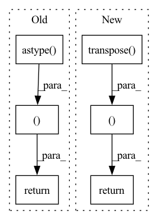

Pattern ID :41537
Before Change
padded_img[: int(img.shape[0] * r), : int(img.shape[1] * r)] = resized_img
image = padded_img
image = image.astype( np.float32)
image = image[:, :, ::-1]
image /= 255.0
if mean is not None:
image -= mean
if std is not None:
image /= std
image = image.transpose(swap)
image = np.ascontiguousarray(image, dtype=np.float32)
return image, r
class TrainTransform:
def __init__(self, p=0.5, rgb_means=None, std=None, max_labels=50):After Change
padded_img -= mean
if std is not None:
padded_img /= std
padded_img = padded_img.transpose( swap)
padded_img = np.ascontiguousarray(padded_img, dtype=np.float32)
return padded_img, r
class TrainTransform:
def __init__(self, p=0.5, rgb_means=None, std=None, max_labels=50):In pattern: SUPERPATTERN
Frequency: 3
Non-data size: 6
Instances Fragment ID: 116642414
Project Name: megvii-basedetection/yolox
Commit Name: d89453018099062ad0a15d6df2db9a3c65fd3a1a
Time: 2021-07-28
Author: ruinmessi@gmail.com
File Name: yolox/data/data_augment.py
M Class Name: AnonimousClass
N Class Name: AnonimousClass
M Method Name: preproc(5)
N Method Name: preproc(5)
M Parent Class:
N Parent Class:
M File Name: yolox/data/data_augment.py
N File Name: yolox/data/data_augment.py
M Start Line: 171
M End Line: 187
N Start Line: 190
N End Line: 206
Before Change
class BaseSegmentation(BaseTransforms):
def __call__(self, input, target=None):
if target:
return (
input.transpose(2, 0, 1).astype( "float32") / 255,
target.transpose(2, 0, 1) ,
)
else:
input.transpose(2, 0, 1).astype("float32") / 255After Change
image = sample.get("image", None)
mask = sample.get("mask", None)
if mask:
return (image.transpose( 2, 0, 1) .astype("float32") / 255, mask )
else:
image.transpose(2, 0, 1).astype("float32") / 255
Fragment ID: 116642413
Project Name: biasvariancelabs/aitlas
Commit Name: 27f312141915526df146b366df480919d479e6f3
Time: 2020-11-01
Author: ivan.kitanovski@gmail.com
File Name: aitlas/transforms/segmentation.py
M Class Name: BaseSegmentation
N Class Name: BaseSegmentation
M Method Name: __call__(2)
N Method Name: __call__(3)
M Parent Class: BaseTransforms
N Parent Class: BaseTransforms
M File Name: aitlas/transforms/segmentation.py
N File Name: aitlas/transforms/segmentation.py
M Start Line: 8
M End Line: 15
N Start Line: 9
N End Line: 14
Before Change
padded_img[: int(img.shape[0] * r), : int(img.shape[1] * r)] = resized_img
image = padded_img
image = image.astype( np.float32)
image = image[:, :, ::-1]
image /= 255.0
if mean is not None:
image -= mean
if std is not None:
image /= std
image = image.transpose(swap)
image = np.ascontiguousarray(image, dtype=np.float32)
return image, r
class TrainTransform:
def __init__(self, p=0.5, rgb_means=None, std=None, tracking=False, max_labels=50, augment=True):After Change
padded_img -= mean
if std is not None:
padded_img /= std
padded_img = padded_img.transpose( swap)
padded_img = np.ascontiguousarray(padded_img, dtype=np.float32)
return padded_img, r
class TrainTransform:
def __init__(self, p=0.5, rgb_means=None, std=None, tracking=False, max_labels=50, augment=True): Fragment ID: 116642412
Project Name: zhangming8/yolox-pytorch
Commit Name: b852d6926fe161068a2c61eacd1c7d99595068ed
Time: 2021-08-01
Author: zhangming8@github.com
File Name: data/data_augment.py
M Class Name: AnonimousClass
N Class Name: AnonimousClass
M Method Name: preproc(5)
N Method Name: preproc(5)
M Parent Class:
N Parent Class:
M File Name: data/data_augment.py
N File Name: data/data_augment.py
M Start Line: 168
M End Line: 183
N Start Line: 176
N End Line: 192